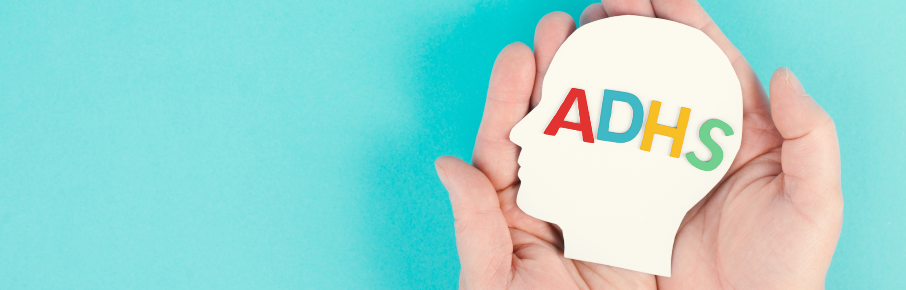

Vielleicht hast du ein Kind in deiner Gruppe, das ständig in Bewegung ist, schnell abgelenkt wirkt oder große Schwierigkeiten hat, sich an Regeln zu halten. Und vielleicht kennst du auch diesen inneren Druck: Du willst helfen, aber weißt manchmal nicht genau wie. Genau hier setzt dieser Artikel an. Denn du bist nicht allein — und es gibt Wege, wie du Kinder mit ADHS liebevoll, klar und sicher begleiten kannst.
in jeder Gruppe ein Kind
mit konkreten Tipps
den größten Unterschied: Struktur

ADHS in der Kita: Was dahinter steckt und warum es uns herausfordert
ADHS bedeutet nicht einfach nur unruhig sein. Es geht um viel mehr. Kinder mit ADHS nehmen ihre Umwelt oft intensiver wahr. Sie sind schneller überfordert, reagieren impulsiv und haben Schwierigkeiten, ihre Aufmerksamkeit zu steuern.
Im Kita-Alltag zeigt sich das zum Beispiel so:
- Ein Kind steht ständig auf und wechselt Aktivitäten
- Es fällt schwer, Anweisungen zu folgen
- Gefühle kommen plötzlich und stark
- Übergänge führen schnell zu Stress
Und genau hier beginnt eure wichtige Arbeit. Denn diese Kinder brauchen keine Strafen oder ständige Korrektur. Sie brauchen Verständnis, Struktur und klare Orientierung.
Wenn Kinder wissen, was als Nächstes passiert, können sie sich besser orientieren. Wenn Abläufe gleich bleiben, entsteht Sicherheit. Und genau das hilft ihnen, sich zu regulieren.
Ein typischer Kita-Tag mit einem ADHS-Kind — so kannst du konkret unterstützen
Stell dir vor, du begleitest ein Kind mit ADHS bewusster durch euren Alltag. Nicht perfekt, aber ruhiger und klarer. Genau hier kannst du ansetzen und wirklich etwas verändern.
Sicherheit durch klare Rituale
Der Start in den Tag ist für Kinder mit ADHS oft besonders herausfordernd. Viele Eindrücke treffen gleichzeitig auf sie ein: Geräusche, Menschen, Erwartungen. Du kannst helfen, indem du den Morgen klar strukturierst.
- Begrüße das Kind ruhig und bewusst
- Nutze jeden Morgen denselben Ablauf
- Erkläre kurz und klar, was heute passiert
Reize reduzieren und Orientierung geben
Im Laufe des Vormittags steigt oft die Unruhe. Kinder mit ADHS nehmen viele Dinge gleichzeitig wahr und können Reize schwer filtern. Du kannst unterstützen, indem du bewusst für Entlastung sorgst.
- Reduziere unnötige Reize im Raum
- Gib kurze und klare Anweisungen
- Stelle Blickkontakt her, bevor du sprichst
- Arbeite mit kleinen, überschaubaren Aufgaben
Damit es nicht eskaliert
Übergänge sind oft die schwierigsten Momente. Vom Spielen zum Aufräumen. Vom Raum nach draußen. Vom freien Spiel zur festen Situation. Für Kinder mit ADHS fühlt sich das oft wie ein Bruch an.
- Kündige Veränderungen frühzeitig an
- Nutze immer die gleiche Reihenfolge
- Gib dem Kind Zeit, sich einzustellen
Gefühle verstehen und begleiten
Gerade rund um das Essen entstehen oft Spannungen. Kinder sind müde, reizüberflutet oder angespannt. Wenn ein Kind impulsiv reagiert oder sich verweigert, steckt oft Überforderung dahinter.
Hier ist deine Haltung entscheidend. Versuche, ruhig zu bleiben und das Verhalten nicht persönlich zu nehmen. Das Kind braucht in diesem Moment keine Strafe, sondern Unterstützung.
Ruhe bewahren und Sicherheit geben
Am Nachmittag sind viele Kinder erschöpft — für Kinder mit ADHS ist das oft besonders spürbar. Unruhe, schnelle Reaktionen und emotionale Ausbrüche können zunehmen.
- Halte Abläufe klar und vorhersehbar
- Bleibe selbst ruhig und präsent
- Begleite Übergänge besonders bewusst
ADHS in der Kita verstehen heißt: Verhalten neu sehen
Vielleicht merkst du beim Lesen, dass sich dein Blick verändert. ADHS ist keine böse Absicht. Es ist auch kein Trotz. Es ist eine andere Art, die Welt wahrzunehmen und darauf zu reagieren.
Wenn du beginnst, Verhalten nicht mehr zu bewerten, sondern zu verstehen, entsteht etwas Neues:
Mehr Geduld
Mehr Ruhe
Mehr Verbindung
Und genau das brauchen diese Kinder.
Du kannst den Unterschied machen
Du bist jeden Tag nah dran. Du erlebst die Herausforderungen — aber auch die kleinen Fortschritte. Und genau darin liegt deine Stärke.